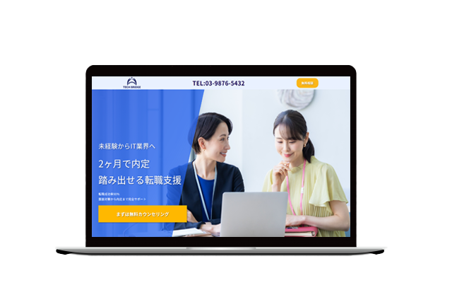

TECH BRIDGE 架空LPサイト
サイトを見る▶
概要
未経験からIT業界への転職を支援する架空の転職エージェントサービス「TECH BRIDGE」のLPを制作。 転職に不安を抱える20代〜30代に向けて、安心感と信頼感を与え、無料相談への導線強化を目的とした1ページ完結型のサイト。
目的
未経験層に対して「IT転職は現実的である」と感じてもらい、不安を軽減しながら無料カウンセリングへの問い合わせにつなげることを目的とした。転職に踏み出せていないユーザーが安心して行動できるよう、実績・サポート内容・導線設計を意識したLP構成とした。
ターゲット
25〜30歳のIT企業へ転職したい人
デザイン
青を基調にした信頼感のある配色設計。
「固すぎない転職サービス」をテーマに、親しみやすさと信頼感のバランスを重視。
制作期間
企画立案・デザインカンプ：約7時間
コーディング：約7時間
使用ソフト
Illustrator / Figma / Firefly / VS CODE